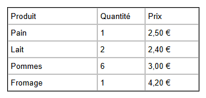

Parcours d'apprentissage › Leçon 1
Votre premier tableau

Tableau, ligne, colonne et cellule
- Un tableau se compose de lignes (horizontales) et de colonnes (verticales).
- À l'endroit où une ligne et une colonne se croisent se trouve une cellule : c'est là que va le texte.
- Au-dessus et à gauche du tableau, vous voyez les en-têtes (A, B, C ... et 1, 2, 3 ...). Ils servent à sélectionner une colonne ou une ligne entière.
À vous de jouer
- Un nouveau tableau compte 5 colonnes et 5 lignes. Il nous en faut seulement 3 : cliquez sur l'en-tête de colonne D puis, dans
l'onglet
 Tableau (T), sur DC
(Supprimer la colonne). Faites de même pour la colonne E.
Tableau (T), sur DC
(Supprimer la colonne). Faites de même pour la colonne E. - Double-cliquez sur la première cellule et tapez Produit. Terminez par Ctrl+Entrée ou cliquez sur une autre cellule.
- Tapez de la même façon Quantité et Prix dans les cellules suivantes, puis complétez les courses en dessous.
- Une colonne est trop étroite ? Faites glisser la ligne de séparation vers la droite dans les en-têtes de colonnes.
- Enregistrez votre conception avec
 Enregistrer le concepteur de tableau. Vous pourrez ainsi continuer plus tard.
Enregistrer le concepteur de tableau. Vous pourrez ainsi continuer plus tard. - Cliquez en bas sur Cliquez ici pour des fonctions supplémentaires, puis sur
 Ouvrir le navigateur de test : vous voyez votre tableau comme une page web.
Ouvrir le navigateur de test : vous voyez votre tableau comme une page web.
.htd est votre conception, sur laquelle vous
continuez à travailler. Pour obtenir une vraie page web, enregistrez un fichier .html avec
Enregistrer le document HTML dans le volet (voir Fichiers & export).Exercice
Ajoutez en bas une ligne avec Œufs, 12 et 3,50 €. Ajoutez ensuite à droite une quatrième colonne Magasin et indiquez où vous achetez chaque produit.
Solution
Dans l'onglet Tableau (T), cliquez sur AR (Ajouter une ligne) : une ligne vide apparaît. Double-cliquez sur les cellules et tapez le texte. AC (Ajouter une colonne) ajoute une colonne ; tapez Magasin dans la cellule du haut et complétez le reste. Enregistrez à nouveau et regardez le résultat dans le navigateur de test.
Vous travaillez sous Linux ? Cette aide s'ouvre alors dans votre navigateur habituel et le bouton ne peut pas
ouvrir l'exemple dans le concepteur. Ouvrez-le vous-même avec Ouvrir le concepteur de tableau : dossier
lessen/fr, fichier les01-boodschappen.htd.